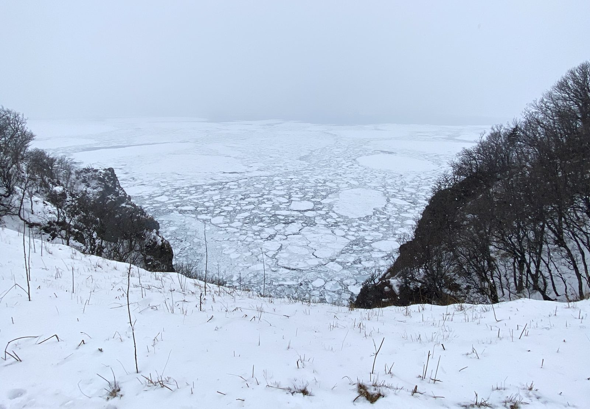
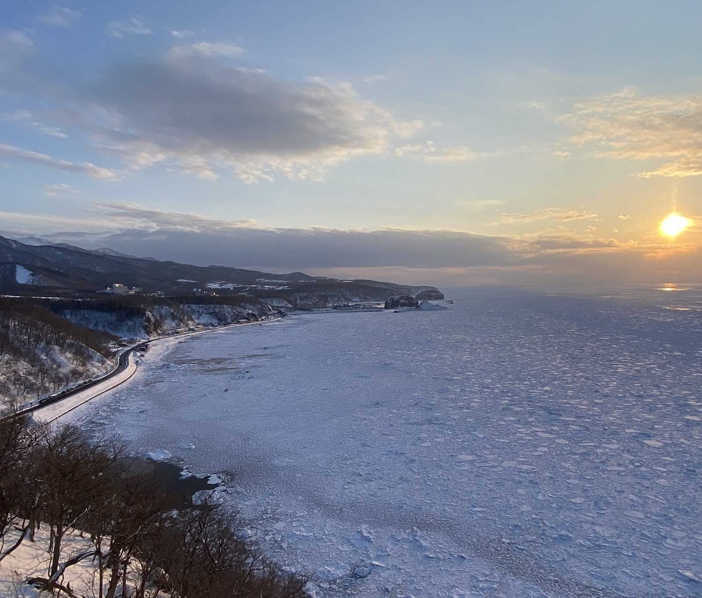

イベントは毎日13:30に終了。午後はたっぷり自由時間です。潜らない同行者の方にも、世界自然遺産・知床の冬は見どころにあふれています。温泉、流氷の絶景、凍る滝、そして北海道のごはん——ウトロ周辺のおすすめをご紹介します。

ウトロ市街から車で約5分の「知床自然センター」は、知床国立公園の情報拠点。大型スクリーンの映像シアターやカフェ・ショップがあり、冬期（10月下旬〜4月中旬）は9:00〜16:00に開館しています。スノーシューや長靴のレンタルもここで受け付けています。
センターから続く往復約2kmの遊歩道の先が「フレペの滝」。断崖から流れ落ちる地下水が冬は青白く凍りつき、展望台からは流氷のオホーツク海を一望できます。エゾシカやオオワシに出会えることも。冬は雪原をスノーシューで歩くコースになるため、地元ガイドツアー（知床ネイチャーオフィス・SHINRA・ピッキオ知床など）への参加がおすすめです。
氷点下の海で冷えた体には、温泉がいちばんのごほうび。ウトロは道東有数の温泉地で、リゾートホテルの日帰り入浴やサウナが利用できます。
※日帰り入浴の受入時間・料金は季節や館内状況により変わります。ご利用当日に各施設へご確認ください。公衆浴場「夕陽台の湯」は冬期休業（例年6月〜10月営業）です。

ウトロは「夕陽の町」とも呼ばれます。2月は16時半ごろ、流氷に覆われたオホーツク海へ夕日が沈み、白い氷原が茜色に染まります。ダイビング後でも十分間に合う、一日の締めくくりにぴったりの絶景です。
おすすめは、温泉街から歩ける展望地「夕陽台」、知床五湖方面へ車で約5分の「プユニ岬」（ウトロで最初に流氷が見えるスポット）、ウトロ港脇にそびえる高さ60mの「オロンコ岩」。いずれも知床八景に数えられる名所です。冬は積雪・凍結があるため、足元には十分ご注意ください。
漁港の町ウトロは海の幸の宝庫。冬も営業しているお店をご紹介します。冬期は不定休や短縮営業が多いため、事前の確認がおすすめです。
※港の新鮮な魚が自慢の「ウトロ漁協婦人部食堂」（例年4月下旬〜11月中旬）など、夏期のみ営業の名物店もあります。各ホテルの夕食ビュッフェも充実しています。
専用のドライスーツを着て流氷の上を歩き、氷の海に浮かぶ人気ツアー。資格がなくても参加でき、地元の各ガイド会社が開催しています（要予約）。
冬期の知床五湖は、認定ガイド同行のスノーシューツアーでのみ入場できます。誰の足跡もない雪原と凍った湖の上を歩く特別な体験です。
冬の知床はオオワシ・オジロワシの越冬地。エゾシカやキタキツネには道路沿いでも出会えます。運転中は飛び出しに十分ご注意を。